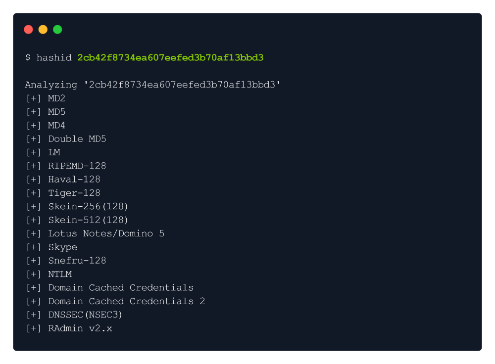
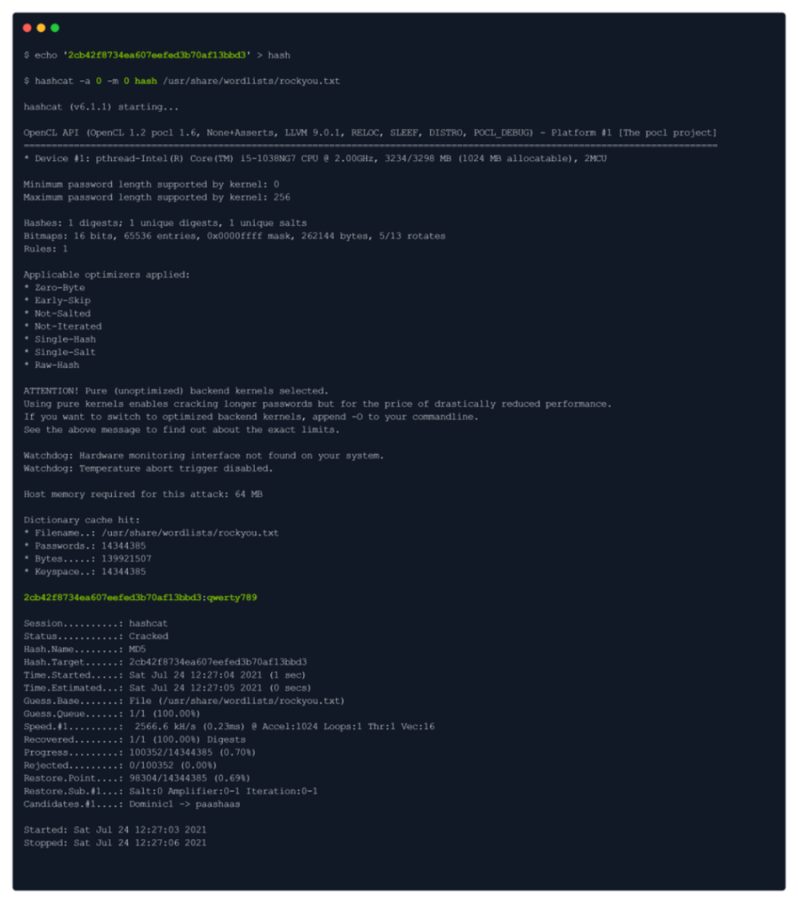
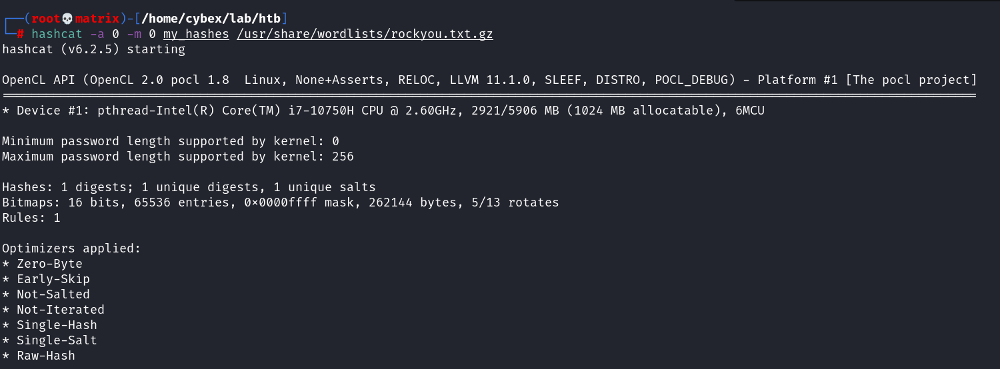
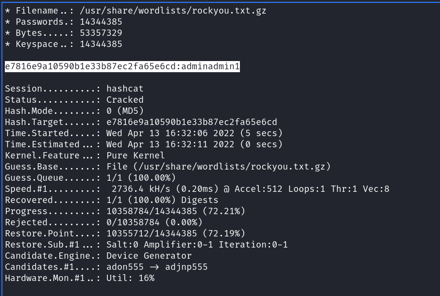

hashcat & hashid
We can see the credentials of admin:2cb42f8734ea607eefed3b70af13bbd3 , which we might be able to use.
But the password seems hashed.
We will try to identify the hash type & crack it with the hashcat:
It provides a huge list of possible hashes, however, we will go with MD5 first:
We will put the hash in a text file called hash & then crack it with hashcat:
We got the password : qwerty789
One more Hashcat Example:
We can see the password (adminadmin1) in the following snap.
From Googlehashcat -a 0 -m 0 crackme.txt /usr/share/seclists/Passwords/Leaked-Databases/md5decryptor-uk.txt -r /usr/share/hashcat/rules/best64.rule
Hash Help:hashcat -h | grep NTLM
Hash Wiki (To ge the codes for -m)
https://hashcat.net/wiki/doku.php?id=example_hashes